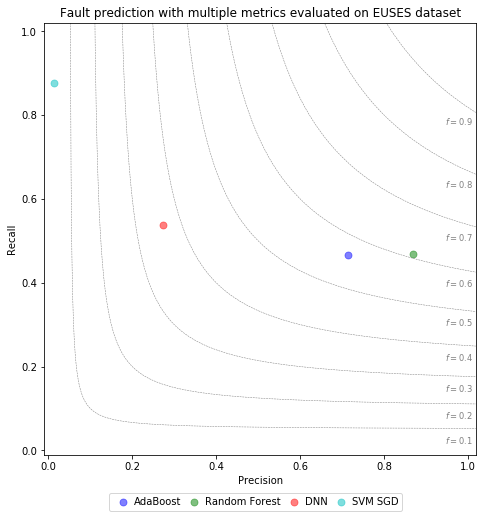

Description
In Study 2, we evaluate the performance of metric combinations when used to train certain ensemble ML model types to predict faulty spreadsheet cells. On this page, we provide high-resulution plots that show these results for the different classifier types evaluated on each of the three datasets (Enron Errors, Info1, Euses). In addition, we provide boxplots for all datasets, that give another perspective on individual learned models's performances during the cross-validation procedure.
Plot Types
To compare model prediction performances, we employ a custom plot type, the Precision / Recall / F1 plot, that combines precision, recall, and f1-performance for a specific evaluated model. The evaluation result of each trained model is illustrated by a symbol in the plot area. For any given symbol in the plot, its horizontal position corresponds to the precision score of the evaluated model. Likewise, its vertical precision corresponds to the Recall score of the evaluated model. Lastly, the symbol's position in relation to radial lines indicate the model's achieved F1 measure.
Boxplots provide distribution information of the f1-values measured of each individual evaluation during the cross-validation scheme for each learner. For these plots, RF stands for Random Forest, and AB For AdaBoost.
Plots
Plots are organized into groups based on the employed plot type, first showing Precision / Recall / F1, and then Boxplots of the evaluation.
Precision / Recall / F1 plots



Boxplots